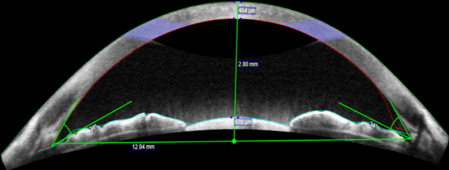
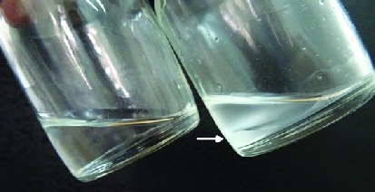
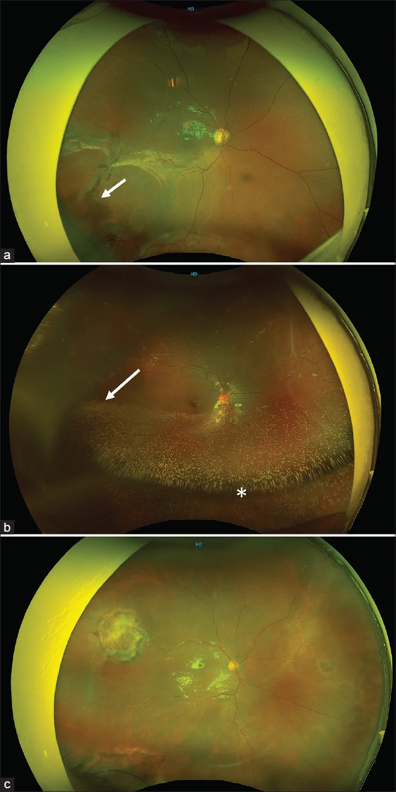

1417 — Khi nào GIỮ dầu silicone vĩnh viễn: chọn ca, theo dõi dầu tồn lưu và hậu quả dài hạn / Permanent silicone oil retention
Tags: pattern:dau-silicone pattern:dau-ton-luu pattern:nhu-tuong-hoa pattern:duc-dau pattern:tang-nhan-ap pattern:bong-tai-phat vung:dich-kinh vung:tien-phong vung:vong-mac vung:dia-thi score:PVR protocol:UWF protocol:AS-OCT protocol:sieu-am-B-scan protocol:OCT-RNFL-GCL
Mức chắc chắn (certainty): tổng hợp y văn (literature synthesis) — nhóm tự biên từ: tổng quan phẫu thuật glôcôm do dầu (CC BY 4.0, PMC9031548), đoàn hệ retinectomy PVR 66 mắt (CC BY 4.0, PMC13339574), nghiên cứu AS-OCT tiền phòng ở mắt giữ dầu > 12 tháng (CC BY 4.0, PMC11762219), ca dầu đục sau 1 năm tồn lưu (CC BY 4.0, PMC8126750), nghiên cứu yếu tố nguy cơ nhũ tương hóa sớm 81 mắt (CC BY-NC-ND 4.0, PMC13674869); số liệu bong tái phát sau lấy dầu kế thừa bài 1410.
Vì sao bài này quan trọng: bài 1410 và 1416 đều xoay quanh việc lấy dầu và xử trí biến chứng. Nhưng trong thực hành có một nhóm cố ý để dầu suốt đời: võng mạc chỉ áp được nhờ dầu, lấy ra là bong lại. Quyết định này không có "liều an toàn" đã chứng minh — y văn 2026 vẫn ghi thiếu đồng thuận về thời gian tamponade an toàn. Cái giá của việc giữ dầu là nhũ tương hóa tăng theo thời gian, glôcôm 2,2–56%, bệnh giác mạc 2–30%, mất thị lực không giải thích được (SORVL) 3,3–50% và có thể dầu đục hoàn toàn (ca 13 tuổi: 1 năm không tái khám → dầu trắng đục, nhãn áp 48 mmHg, mất toàn bộ vành thị thần kinh). Vì vậy "giữ dầu" chỉ an toàn khi đi kèm một lịch theo dõi có ngưỡng ra quyết định, không phải "bơm rồi quên".
1. Tổng quan bệnh học – vì sao giữ dầu là đánh đổi, không phải lựa chọn miễn phí
- Dầu giữ võng mạc bằng gì: dầu silicone (polydimethylsiloxane, PDMS) tỷ trọng 0,97 g/cm³, chiết suất 1,40, độ nhớt 1.000–5.700 mPa·s, sức căng mặt phân cách với nước ≈ 35 mN/m. Dầu không sinh áp lực như khí; nó bịt lỗ rách và ép võng mạc vào thành nhờ sức căng bề mặt, đồng thời chặn cytokine và tế bào tăng sinh lan trong khoang dịch kính. Vì thể tích không đổi theo thời gian, dầu phù hợp cho trẻ nhỏ và người không thể nằm sấp — đây là lý do chính khiến dầu được giữ lâu.
- TẠI SAO thời gian giữ dầu là biến số độc lực: ba quá trình chạy song song theo thời gian:
- Nhũ tương hóa (emulsification): lực cắt khi mắt chuyển động phá dầu thành giọt; giọt < 1 µm đi vào bè, nội mô, nội võng mạc và thần kinh thị. Tỉ lệ 0,7–56%, tăng theo thời gian giữ dầu; một nghiên cứu 81 mắt bong võng mạc rách cho thấy tuổi bệnh nhân (p = 0,032), đai củng mạc (p = 0,006) và thời gian tamponade là yếu tố độc lập; 58% mắt có bơm thiếu thể tích (suboptimal fill) trên ảnh góc rộng — thiếu thể tích làm tăng diện dầu–nước và lực cắt.
- Tương tác bề mặt: dầu bám nội mô → mất tế bào, phù, bệnh giác mạc 2–30%; dầu trong tiền phòng làm bít bè và gây glôcôm (bài 1416). Bất thường nội mô trên confocal gặp ở tới 75% mắt có dầu tiền phòng dù đèn khe bình thường.
- Độc tính thần kinh–võng mạc: SORVL 3,3–50% (mất > 2 dòng Snellen, không tương xứng tổn thương võng mạc nhìn thấy), mỏng lớp trong hoàng điểm, tổn thương bó nhú–hoàng điểm, giảm mật độ mạch máu hoàng điểm; có giả thuyết dầu hòa tan lutein/zeaxanthin làm hoàng điểm mất bảo vệ trước ánh sáng.
- Dầu "già" còn đổi cả bản chất vật lý: ca 13 tuổi bơm dầu 1.000 cS, tái khám sau 1 năm với dầu đục trắng, không nhũ tương hóa, không còn ánh đáy mắt; dầu hút ra nặng hơn dầu bình thường (lắng xuống dưới lớp dịch truyền) — tức đã ngậm nước/tạp chất, không còn là PDMS tinh khiết. Đây là lý do "dầu đục" và "dầu nhũ tương hóa" là hai hình thái khác nhau, và cả hai đều là dấu hiệu phải đánh giá lại.
- Vì sao LẤY dầu cũng nguy hiểm: dầu đang là "khung" duy nhất giữ võng mạc; bỏ khung khi PVR còn hoạt động → bong tái phát 14,9–22,4% (y văn 5–31,4%; OR 4,8 nếu đã có tiền sử mổ thất bại). Trong loạt 66 mắt cắt võng mạc (retinectomy) vì PVR, tái phát 33,3% (22/66), chia đều 12 ca khi còn dầu và 10 ca sau khi lấy dầu; thời gian lấy dầu trung bình 5,4 ± 2,3 tháng; nhãn áp thấp ≤ 5 mmHg 7,5%, nhãn áp > 25 mmHg 7,5%. Tác giả kết luận: có thể để dầu tại chỗ ở mắt nguy cơ bong tái phát cao.
- Vì sao tháo dầu muộn lại kém: thời gian giữ dầu càng dài, thị lực sau tháo càng kém (OR 1,226 mỗi tháng; 95% CI 1,073–1,402; p = 0,003) và bong tái phát làm thị lực giảm thêm (OR 3,400). Nghĩa là quyết định "giữ" phải được đặt lịch xem lại, không phải mặc định.
2. Mẫu hình + gamut theo tình huống lâm sàng (khi nào giữ, khi nào lấy)
- Nhóm GIỮ (dầu là phương tiện duy nhất còn lại):
- PVR nặng / đã cắt võng mạc 360°, đã thất bại nhiều lần: võng mạc áp chỉ nhờ dầu, không còn màng co kéo tháo được, nguy cơ bong tái phát rất cao.
- Mắt độc nhất (single eye) hoặc mắt còn lại đã mất chức năng: ưu tiên giữ giải phẫu hơn mạo hiểm lấy dầu.
- Nhãn áp thấp/tiền phẫu thuật (hypotony) sau nhiều lần mổ: dầu còn giúp giữ thể tích nhãn cầu, tránh teo nhãn.
- Trẻ nhỏ/người không thể nằm sấp hoặc không hợp tác tư thế: dầu không cần positioning, thể tích không đổi.
- Bệnh nhân có thể theo dõi được — đây là điều kiện bắt buộc, không phải tiêu chí phụ.
- Nhóm LẤY (dầu đang gây hại nhiều hơn lợi):
- Võng mạc áp ổn định ≥ 3–6 tháng, không co kéo, hết lỗ và nguy cơ bong thấp → lấy theo lịch thường quy.
- Nhũ tương hóa tiến triển + glôcôm không kiểm soát dù 3 thuốc (bài 1416).
- Bệnh giác mạc do dầu (phù, giảm tế bào nội mô) hoặc dầu chiếm tiền phòng.
- SORVL tiến triển (giảm thị lực không giải thích, OCT thấy mỏng lớp trong/bó nhú–hoàng điểm).
- Dầu đục hoàn toàn che đáy mắt, không còn theo dõi được võng mạc.
- Nhóm "giữ nhưng đổi kế hoạch": dầu còn nhưng nhãn áp bắt đầu tăng, nhũ tương độ 2–3, bơm thiếu thể tích → bổ sung thể tích hoặc thay dầu thay vì lấy hẳn, để vẫn giữ tamponade.

*AS-OCT tiền phòng ở mắt giữ dầu dài hạn: đo bề dày giác mạc trung tâm 494 µm, độ sâu tiền phòng 2,80 mm, đường kính tiền phòng 12,04 mm, góc mống mắt–giác mạc 52°/56°. Ở 78 mắt/42 người, nhóm giữ dầu > 12 tháng khác biệt có ý nghĩa về đường kính tiền phòng so với mắt PPV không dầu và mắt chưa mổ (p < 0,001) — bằng chứng dầu tồn lưu thay đổi hình thái tiền phòng, dù CCT/độ sâu/góc không khác. Nguồn: Singh G et al., Int Ophthalmol 2025 (PMC11762219) Fig. 1, CC BY 4.0.*3. Bảng so sánh phân biệt (ma trận đối chiếu quyết định)
| Tình huống (entity) | Hình ảnh/đo lường điển hình | Chốt vào (rule-in: giữ dầu) | Chốt loại (rule-out: phải lấy/thay) | Gợi ý xác nhận |
|---|---|---|---|---|
| PVR nặng, retinectomy 360°, đã mổ lại nhiều lần | Võng mạc áp sát dầu, màng co kéo không tháo được, lỗ lớn/ngoại vi; OCT choán chỗ | Võng mạc chỉ áp nhờ dầu + không còn cách cố định khác | Có màng co kéo tháo được, lỗ đã đóng, võng mạc áp ≥ 3–6 tháng | UWF + OCT + đối chiếu số lần mổ; hội chẩn võng mạc |
| Mắt độc nhất | Mắt bên kia mù/đã bỏ; mắt này thị lực còn | Nguy cơ mất thị lực cuối cùng nếu bong > lợi ích tháo dầu | Mắt bên kia còn tốt, nguy cơ bong thấp | Đánh giá chức năng hai mắt + nguyện vọng bệnh nhân |
| Nhãn áp thấp/teo nhãn cầu | Nhãn áp ≤ 5 mmHg, tiền phòng nông, hắc mạc dày | Dầu giữ thể tích, tránh phthisis | Nhãn áp bình thường, không teo | Đo nhãn áp lặp lại, siêu âm B-scan |
| Nhũ tương hóa tiến triển | Giọt vàng óng ở góc, AS-OCT điểm tăng phản xạ, OCT giọt nội võng mạc; thời gian giữ dầu dài | Nhũ tương nhẹ, nhãn áp còn kiểm soát, chưa có bệnh giác mạc | Nhãn áp không kiểm soát, phù giác mạc, giọt trên đĩa thị | AS-OCT + gonioscopy + OCT hậu cực mỗi 6–12 tháng |
| Dầu đục (opacification) | Đục trắng, không ánh đáy mắt, B-scan vẫn thấy võng mạc; dầu hút ra nặng hơn bình thường | Hiếm khi giữ — chỉ khi không thể mổ và võng mạc đã ổn định | Không theo dõi được võng mạc + nhãn áp tăng → thay/lấy dầu | Đèn khe + B-scan; so màu dầu hút ra với lọ chuẩn |
| Bơm thiếu thể tích | UWF: mặt thoáng dầu thấp, dầu "lỏng" ở nửa dưới; 58% mắt trong một loạt | Bổ sung dầu nếu võng mạc còn nguy cơ | Không thiếu thể tích, nhũ tương nhẹ | UWF + OCT; đo thể tích ước tính trên ảnh |
4. Protocol theo dõi + ngưỡng ra quyết định
Lịch theo dõi mắt giữ dầu (đề xuất thực hành, dựa trên các ngưỡng đã nêu):
| Thời điểm | Việc làm | Ngưỡng hành động |
|---|---|---|
| Mỗi lần khám | Nhãn áp, đèn khe (tiền phòng, dầu, giác mạc), soi góc | Nhãn áp ≥ 25 mmHg hoặc tăng ≥ 10 mmHg so với nền → điều trị/bài 1416 |
| 3–6 tháng | UWF đánh giá độ đầy dầu + nhũ tương; OCT hậu cực | Nhũ tương tăng độ, giọt trên đĩa thị → cân nhắc thay/lấy dầu |
| 6–12 tháng | AS-OCT tiền phòng (CCT, ACD, góc), OCT RNFL–GCC, thị trường nếu làm được | Mỏng RNFL/GCC tiến triển không tương xứng nhãn áp → tìm SORVL/glôcôm |
| 12 tháng | Đếm tế bào nội mô (nếu có specular/confocal) | Giảm nhanh + dầu tiền phòng → lấy dầu sớm |
| Bất kỳ | B-scan khi môi trường đục (dầu đục, đục thể thủy tinh) | Không thấy võng mạc → không thể tiếp tục "giữ mà không theo dõi" |
flowchart TD
A[Võng mạc áp dưới dầu] --> B{Còn co kéo hoặc lỗ chưa đóng?}
B -->|Có| C[Giữ dầu + theo dõi 3-6 tháng]
B -->|Không| D{Nguy cơ bong tái phát cao: PVR nặng, retinectomy, mắt độc nhất?}
D -->|Có| E[Giữ dầu + lịch theo dõi có ngưỡng]
D -->|Không| F[Lấy dầu theo lịch + khám đáy mắt sau 1-2-4-12 tuần]
E --> G{Nhãn áp tăng, nhũ tương tiến triển, giác mạc phù?}
G -->|Không| H[Tiếp tục theo dõi UWF + AS-OCT + OCT RNFL]
G -->|Có| I[Thay dầu hoặc lấy dầu + xử trí glôcôm]
F --> J{Nhãn áp tăng hoặc nhũ tương còn?}
J -->|Có| K[Điều trị theo bài 1416]
Kỹ thuật khi quyết định lấy/thay dầu:
- Lấy dầu kèm laser 360° và/hoặc khí không làm giảm tỉ lệ bong tái phát trong các loạt đã nêu — đừng hứa "laser hàng rào là đủ".
- Rửa dầu nhũ tương bằng PFCL (kỹ thuật 20 mắt): sạch hoàn toàn giọt thấy được 85% (17/20), không mắt nào nhãn áp > 21 mmHg, 65% tăng ≥ 2 dòng Snellen, theo dõi 24,2 tháng (bài 1410).
- Nếu thay dầu vì thiếu thể tích/nhũ tương: dùng cùng độ nhớt hoặc cao hơn, bơm đầy (tránh underfill), và kiểm tra thể tích trên UWF sau mổ.
5. Biến thể bình thường và cạm bẫy
- "Dầu đục" ≠ "dầu nhũ tương hóa": dầu đục là mất độ trong suốt toàn khối (không thấy đáy mắt), thường kèm tăng tỷ trọng do ngậm nước; nhũ tương hóa là giọt nhỏ ly ti thể tích. Trên siêu âm B-scan, dầu đục vẫn hồi âm mạnh như dầu bình thường → đừng loại trừ bong võng mạc chỉ vì "dầu còn đó".
- Bơm thiếu thể tích trên UWF giả "nhũ tương": mặt thoáng dầu thấp tạo dải phản xạ ngang dễ đọc nhầm là lớp giọt; xem thêm OCT và gonioscopy trước khi kết luận.
- Mỏng RNFL/GCC ở mắt giữ dầu: có thể do SORVL (không tương xứng nhãn áp, tổn thương bó nhú–hoàng điểm) chứ không phải glôcôm — đừng tăng thuốc hạ áp vô ích; ngược lại glôcôm do dầu có thể im lặng vì giác mạc phù/khó đo.
- Đo nhãn áp ở mắt đã mổ nhiều lần: giác mạc phù/ghép → đọc thấp giả; dùng nhiều phương pháp, đánh giá đĩa thị và OCT.
- Ảo ảnh trên AS-OCT: dầu trong tiền phòng tạo bóng che góc; nếu chỉ thấy một phần góc, phải xoay đầu bệnh nhân/làm lại, không kết luận "góc mở".
- Thỏa mãn tìm kiếm: đã thấy dầu + võng mạc áp thì dễ bỏ nhũ tương ở góc, giọt trên đĩa thị, đục thể thủy tinh — khám theo trình tự cố định: giác mạc → tiền phòng → góc → thể thủy tinh/IOL → dịch kính/dầu → võng mạc → đĩa thị.
6. Tự lượng giá — Blind Quiz
Ca 1 — Nam 13 tuổi, chấn thương bóng cricket, bơm dầu 1.000 cS; tái khám sau 1 năm vì mờ mắt, nhãn áp 48 mmHg.

- Gợi ý: đèn khe không còn ánh đáy mắt; B-scan vẫn thấy võng mạc áp; dầu hút ra lắng xuống dưới lớp dịch truyền.
- Câu hỏi: (1) Dầu trong ảnh có gì bất thường? (2) Vì sao nhãn áp 48 mmHg mà bệnh nhân không đau? (3) Xử trí và bài học theo dõi?
Bấm để hiện đáp án
- Dấu hiệu: dầu đục trắng (lọ phải) so với dầu trong (lọ trái); dầu đục nặng hơn nên lắng xuống dưới, khác dầu bình thường nổi trên. Không có nhũ tương hóa trên đèn khe.
- Nhãn áp 48 mmHg: glôcôm tiến triển âm thầm ở mắt đã mất cảm giác/đã mổ nhiều lần; dầu đục che đáy mắt nên không đánh giá được đĩa thị — đây là cái giá của "giữ mà không theo dõi".
- Xử trí: lấy dầu (võng mạc áp), kiểm soát nhãn áp; sau mổ nhãn áp 18 mmHg với thuốc nhưng mất toàn bộ vành thị — tổn thương không hồi phục. Bài học: giữ dầu phải có lịch khám + đo nhãn áp + B-scan/UWF; "dầu đục" là chỉ định thay/lấy, không phải "chờ".
- Nguồn ảnh: Chandra P et al., J Ophthalmic Vis Res 2021 (PMC8126750) Fig. 2, CC BY 4.0.
Ca 2 — Bệnh nhân giữ dầu 14 tháng, thị lực 20/200, nhãn áp 16 mmHg, cần quyết định lấy dầu hay không.
- Gợi ý: võng mạc áp, không co kéo; không có dấu hiệu nhũ tương ở góc; bệnh nhân hỏi "có nên lấy dầu?".
- Câu hỏi: (1) AS-OCT đo những gì và giá trị bình thường? (2) Ba yếu tố quyết định lấy hay giữ? (3) Nếu lấy, cần tư vấn gì về nguy cơ?
Bấm để hiện đáp án
- AS-OCT đo CCT 494 µm, ACD 2,80 mm, đường kính tiền phòng 12,04 mm, góc 52°/56° — hình thái tiền phòng gần bình thường; dầu dài hạn có thể làm thay đổi đường kính tiền phòng (p < 0,001) dù CCT/ACD/góc không khác.
- Ba yếu tố: (1) tình trạng võng mạc (áp, không co kéo, lỗ đã đóng), (2) nguy cơ bong tái phát (PVR, số lần mổ, retinectomy, mắt độc nhất), (3) biến chứng do dầu (nhũ tương, glôcôm, giác mạc, SORVL).
- Tư vấn: bong tái phát 14,9–22,4% (tới 31,4%), OR 4,8 nếu từng mổ thất bại; có thể cần mổ lại; theo dõi chặt 1–2–4–12 tuần sau lấy; nếu nguy cơ quá cao → giữ dầu + lịch theo dõi có ngưỡng thay vì lấy.
- Nguồn ảnh: Singh G et al., Int Ophthalmol 2025 (PMC11762219) Fig. 1, CC BY 4.0.
Ca 3 — Mắt giữ dầu 10 tháng, UWF thấy mặt thoáng dầu thấp; nghi "nhũ tương hóa nặng".

- Gợi ý: bệnh nhân không đau, nhãn áp 15 mmHg; OCT hậu cực không thấy giọt trên đĩa thị.
- Câu hỏi: (1) Hình (a) và (b) khác nhau ở đâu? (2) Vì sao "bơm thiếu thể tích" lại thúc đẩy nhũ tương hóa? (3) Xử trí?
Bấm để hiện đáp án
- Dấu hiệu: (a) dầu đầy (optimal fill) nhưng đã có nhũ tương thấy được (mũi tên); (b) dầu thiếu thể tích (suboptimal fill) với mặt thoáng thấp (dấu hoa thị) và dầu đục/nhũ tương lan rộng hơn — 58% mắt trong loạt này có bơm thiếu thể tích.
- Vì sao: thiếu thể tích làm tăng diện tiếp xúc dầu–nước và tăng chuyển động tương đối của dầu trong mắt → lực cắt lớn hơn → nhũ tương hóa sớm hơn; đó là lý do bơm đầy là biện pháp dự phòng.
- Xử trí: nếu võng mạc còn nguy cơ → bổ sung/thay dầu để đạt thể tích đầy; nếu nhãn áp tăng/giọt ở góc → xử trí như bài 1416; theo dõi UWF + AS-OCT mỗi 6–12 tháng.
- Nguồn ảnh: Mohapatra A et al., Indian J Ophthalmol 2026 (PMC13674869) Fig. 1, CC BY-NC-ND 4.0 — nguyên bản, không crop/ghép.
Bài liên quan chéo
- 1410 – Lấy dầu silicone & dầu tồn lưu: nhũ tương hóa, giọt tăng phản xạ trên OCT, bong tái phát sau lấy dầu
- 1416 – Glôcôm do dầu silicone: pupillary block, bít bè do nhũ tương, lấy dầu – van – CPC
- 1402 – Bong võng mạc sau viêm nội nhãn: chọn dầu hay khí
- 445 – Bong võng mạc: tiếp cận chẩn đoán và xử trí
- 442 – Glôcôm trên OCT: RNFL/GCC
Ảnh
1417_tien-phong-dau-lau_AS-OCT_PMC11762219-Fig1-CCBY.jpg— Singh G et al., Int Ophthalmol 2025 (PMC11762219) Fig. 1, CC BY 4.0, nguyên bản.1417_dau-thieu-the-tich_UWF_PMC13674869-Fig1-CCBYNCND.webp— Mohapatra A et al., Indian J Ophthalmol 2026 (PMC13674869) Fig. 1, CC BY-NC-ND 4.0, nguyên bản, không crop/ghép.1417_dau-duc_Syringe_PMC8126750-Fig2-CCBY.jpg— Chandra P et al., J Ophthalmic Vis Res 2021 (PMC8126750) Fig. 2, CC BY 4.0, nguyên bản.- Không tải ảnh từ Radiopaedia/AuntMinnie/Retina Image Bank; chỉ dẫn link ở
sources.md.
Không dùng để chẩn đoán độc lập khi chưa có người hướng dẫn.